| [無料音声DL付]英語で心いやされる ちょっといい話 ちょっといい話シリーズ | |
| ちょっといい話製作委員会 | |
| (2014) | |
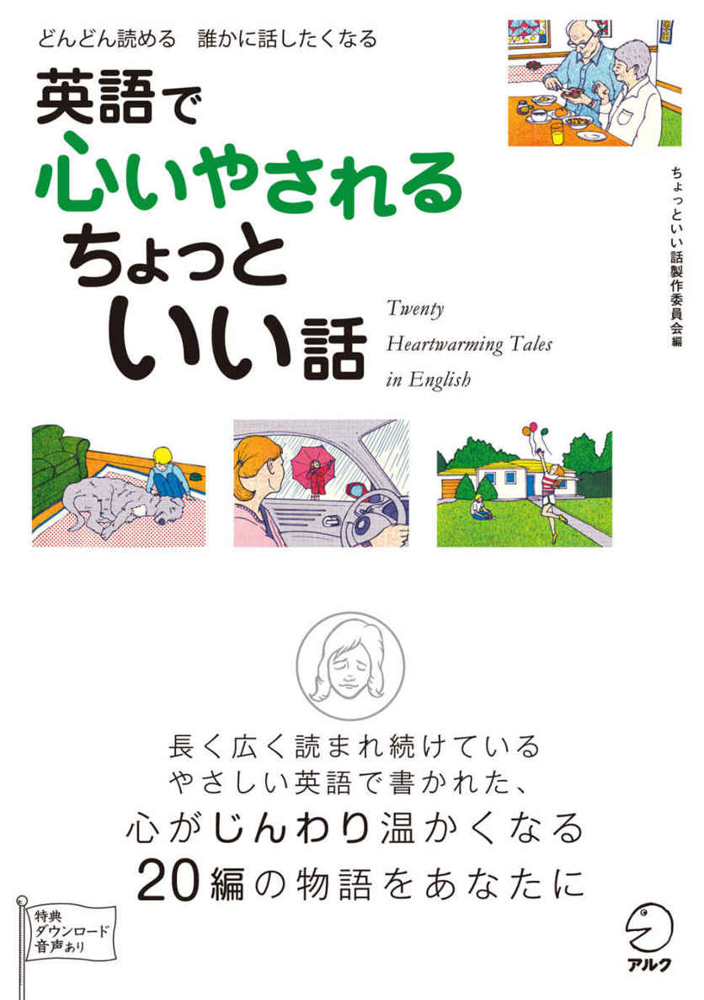
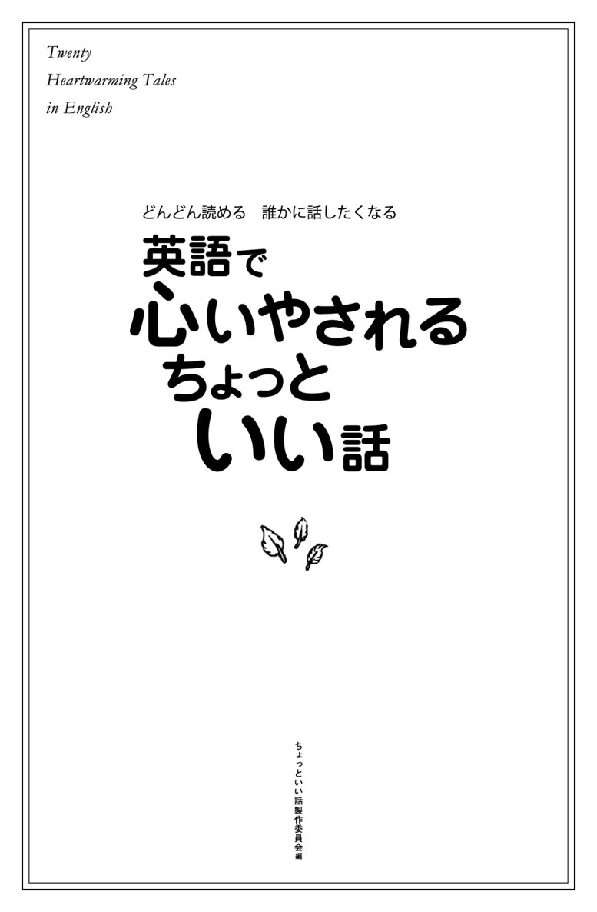
参照項目から元の箇所に戻るには、お使いのビューワーの仕様に従ってください。または一旦目次を表示し、戻りたい箇所の近くの見出しをタップして戻ってください。
Foreword
は じ め に
「興味深い内容で、最後まで読み通せるリーディング教材になかなか出合えない」、「英語の多読に興味はあるけれど、自分のレベルに合う本を見つけるのが難しい」──こんな経験をお持ちの方も多いのではないでしょうか。そんな悩みを解決するのが、本書『英語で心いやされる ちょっといい話』。『英語で泣ける ちょっといい話』『英語で元気が出る ちょっといい話』に続く、シリーズ3冊目となります。
本書に掲載されているのは、英語圏、特にアメリカで長く広く読まれ続けている作者不明の物語。このような物語は、書籍やウェブサイトなど、さまざまな媒体を通じて、今や英語圏以外の国々にも広まっています。
多くの人々に読まれ、愛されている作者不明の物語の中から、今回は特に「心いやされる」20編を厳選してお届けします。20編の「ちょっといい話」でほんわか心が温かくなったり、涙ぐんだりしているうちに、いつの間にか1冊丸ごと英語で読み通せたことに驚かれることでしょう。
それぞれのストーリーは、より読みやすくするために、アルクの「標準語彙水準SVL12000」 （*SVL［Standard Vocabulary List］12000）に基づき、初級3000語レベルの英単語を中心にリライトを行いました。やさしい単語と基本的な構文がベースになっているので、英語でダイレクトに感動を味わえます。
無料でダウンロードできる音声には、物語本文の英文全てが収録されています。音読のお手本として、また、リスニング、リピーティング、シャドーイングなどを通じて、「聞く」「話す」力を伸ばす教材としてもご活用いただけます。
収録した物語は、いずれも味わい深く、読めば誰かに話したくなるようなものばかり。本書を通じて、「英語でダイレクトに内容を理解できた喜び」「読み切った達成感」を感じていただき、多読へのモチベーションとしていただければ幸いです。
* 「標準語彙水準SVL12000」とは、日本人の英語学習者にとって有用な英単語1万2000語を選び出し、12のレベルに区分した語彙リストです。
アルク 英語出版編集部
ちょっといい話製作委員会
無料ダウンロード音声について
本書に対応するMP3音声は、すべて無料でダウンロードしていただけます。
音声ダウンロードの方法
※PC専用のサイトです。
まずはこちらへアクセス！
アルク ダウンロードセンター
http://www.alc.co.jp/dl/
（※2014年3月時点の情報。今後詳細が変更になる可能性があります）
① 「ダウンロードリスト」の「英語」の中から、「英語で心いやされる ちょっといい話 無料ダウンロード音声」をクリック。
② 申し込みフォームに必要事項をご記入の上送信。
③ メールで「ダウンロードページURL」の案内が届きます。
④ 届いたURLにアクセスして、圧縮ファイルをダウンロードしてください。
ダウンロード音声ファイルについて
圧縮ファイルを解凍ソフトで展開の上、iTunesなどの音声再生ソフトで取りこんでご利用ください。音声再生ソフトでのファイルの取り込み方法や携帯音楽プレーヤーでの利用方法については、ソフトやプレーヤーに付属するマニュアルでご確認ください。
音声ファイルは、音声再生ソフトで次のように表示されます。
出版社名（アーティスト名）：「ALC PRESS INC.」と表示
書名（アルバム名）：『英語で心いやされる ちょっといい話』
ダウンロードした音声のトラック名は
[Chapter01_track01 What's cooler than Freckles?]
のように表示されます。本書の該当のトラック番号とトラック名を確認して再生し、学習してください。
特典ダウンロード音声について
本書の「このストーリーのポイント」のMP3音声は、以下のウェブサイトからダウンロードできます。無料ダウンロード音声と併せてお楽しみください。
音声ダウンロードの方法
※PC専用のサイトです。
まずはこちらへアクセス！
アルク ダウンロードセンター
http://www.alc.co.jp/dl/
① 「ダウンロードリスト」の「英語」の中から、「英語で心いやされる ちょっといい話 特典ダウンロード音声」をクリックします。
② 申し込みフォームに必要事項を入力の上、送信します。
③ メールにて「ダウンロードページのURL」が届きます。
④ 届いたURLにアクセスして、圧縮ファイルをダウンロードしてください。
ダウンロード音声ファイルについて
圧縮ファイルを解凍ソフトで展開の上、iTunesなどでファイルを取り込んでご利用ください。手順については、「ReadMe.txt」で説明しています。
携帯音楽プレーヤーでの利用法や、iTunes以外の再生ソフトを使った取り込み方法については、ソフトおよびプレーヤーに付属するマニュアルでご確認ください。
なお、本書では、ダウンロード音声ファイルについて、次のように表示しています。
トラック01の場合であれば、以下のような表示となります。
DLMP3_01
Chapter 1
家族についての話
What's Cooler than Freckles?
そばかすよりも格好いいのは？
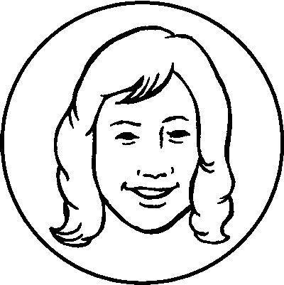
思いやりと愛情
顔にそばかすのたくさんある男の子が、祖母と一緒に動物園へ出掛ける。ある行列に並ぶ女の子に話し掛けた男の子は、頰のそばかすをばかにされて傷ついてしまう。そのとき、祖母が孫に掛けた言葉は......。
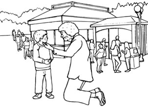
DLChapter01_track01
An old woman and her grandson lived in a small town. The grandson had a lot of bright*1freckles all over his face.
One day, they spent the afternoon at the zoo. While walking around looking at different kinds of animals, they saw a lot of children*2waiting in line in front of the special event tent.
The little boy asked one of the girls in the line what they were waiting for. She told him that they were there to*3get their cheeks painted by a local artist. The artist would draw the children's favorite animals on their cheeks.
"You've got so many freckles on your face. There's no place to paint anything on your cheeks!" the girl in the line said to the little boy.
The little boy was sad and looked down. His grandmother*4knelt down next to him. "I love your freckles. When I was a little girl, I always wanted freckles," she said, while gently touching the boy's cheek. "The artist can draw a nice*5leopard on your cheek. Besides, freckles are wonderful."
The little boy looked up and said, "Really?" "Of course," said the grandmother. "Can you tell me one thing that's cooler than freckles?"
The little boy thought for a moment, carefully looked at his grandma's face, and softly said to her,*6"Wrinkles."
220words
The point of this story
DLMP3_01
When your family or your friends feel unhappy and you know why, what do you say to them? You can cheer them up with your kind words. You may make them smile by saying funny things. This grandmother asks her grandchild one question. Maybe she wants to tell him to love himself including his freckles.
ある小さな町に、年配の女性と孫息子が住んでいました。孫息子には目立つそばかすが顔中にたくさんありました。
ある日、二人はその日の午後を動物園で過ごしました。いろいろな動物を見て歩き回っていると、特設テントの前でたくさんの子どもたちが一列に並んで待っているのが見えました。
幼い男の子は、並んでいる女の子たちのうちの一人に、何を待っているのか尋ねました。女の子は、地元のアーティストから頰にペイントしてもらうのだと言いました。アーティストが、子どもたちの頰に好きな動物を描いてくれるのでした。
「あなたの顔はそばかすだらけね。あなたのほっぺには描く場所がどこにもないわ！」と並んでいる女の子は幼い男の子に言いました。
幼い男の子は、悲しくてうつむきました。おばあさんは彼の隣で膝をつきました。「私はあなたのそばかすが大好きよ。私は小さい頃、いつもそばかすが欲しかったわ」と男の子の頰に優しく触れながら言いました。「アーティストはあなたのほっぺに立派なヒョウが描けるわ。それに、そばかすってすてきよ」
幼い男の子は顔を上げて「本当？」と言いました。「もちろん」とおばあさんは言いました。「そばかすよりも格好いいものを一つでも言えるかしら？」
幼い男の子は少し考え、おばあさんの顔をじっくり観察してから、そっと言いました。「しわだよ」
このストーリーのポイント
家族や友人が落ち込んでいて、あなたにはその原因が分かっているとき、あなたはその人に何と言うでしょうか？ 優しい言葉で励ますことができるかもしれませんね。面白いことを言ってにっこりさせることだってできるかもしれません。このおばあさんは、孫にある質問をしています。きっと彼女は、そばかすも含めて自分のことを愛しなさいと伝えたいのでしょう。
Two Brothers
二人の兄弟
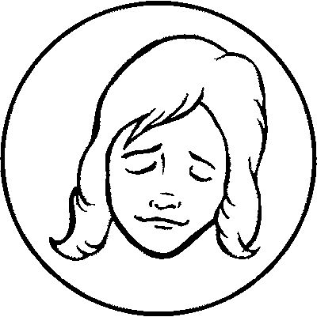
思いやりと兄弟愛
農場を一緒に切り盛りしている兄弟は、所帯持ちと独身という違いはあれど、一日の終わりに、その日の収穫や利益を全て平等に分けていた。しかし、互いに「自分はもらい過ぎだ」と感じて、毎晩あることを実行するが......。
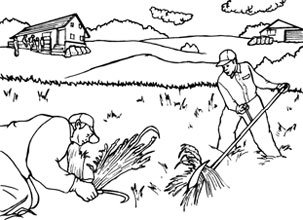
DLChapter01_track02
Two brothers worked together on the family farm. One was married and had a large family. The other was single. At the end of each day, the brothers shared all of their*1produce and profit*2equally.
One day the single brother said to himself, "It's not right that we share the produce and the profit equally. I'm alone and my needs are simple." So each night he took one of his*3sacks of*4wheat and quietly walked across the field between their houses, and left it outside his brother's house.
At the same time, the married brother said to himself, "It's not right that we share everything equally.*5After all, I'm married and I have a wife and children to*6look after me*7in years to come. My brother has no one to*8take care of him in the future." So each night, he took a sack of wheat and left it for his single brother.
For years, both men were*9puzzled that their*10supply of wheat never seemed to decrease. Then one dark night, the two brothers*11ran into each other. Slowly it*12became clear to them what was happening. They dropped their sacks and*13put their arms around each other tightly.
203words
The point of this story
DLMP3_02
You may think it is natural to divide everything equally between brothers or sisters. Some of you have tried to do that since you were a child. However, these brothers question that idea because they notice that they have different needs in life. Each of them is concerned about the other's life and*14moves into action. And that brings both of them real happiness equally.
二人の兄弟が、家族経営の農場で一緒に働いていました。一人は結婚していて、大家族でした。もう一人は独身でした。日々の終わりに、兄弟は収穫や利益の全てを平等に分けていました。
ある日、独身の方は思いました。「収穫と利益を平等に分けるのはおかしい。私は独り者だから、必要なものなんて知れている」。そこで、彼は毎晩自分の小麦の袋を一つ持って、二人の家の間にある畑を静かに横切ると、もう一人の兄弟の家の外に置きました。
同じ頃、結婚している方は思いました。「全てを平等に分けるのはおかしい。何と言っても、私は結婚しているから、この先面倒を見てくれる妻と子どもたちがいる。私の兄弟には将来世話をしてくれる人が誰もいない」。そこで、彼は毎晩一袋の小麦を持って、独身の兄弟のために置いておきました。
何年もの間、自分たちの小麦の量が全く減らないことに、二人とも戸惑っていました。すると、ある真っ暗な夜、二人の兄弟は偶然出くわしてしまいました。何が起きていたのか、二人は徐々に悟りました。彼らは手に持っていた袋を落とすと、固く抱き合いました。
このストーリーのポイント
兄弟や姉妹の間で、全てを平等に分けることは当然のことだと、あなたは思っているかもしれません。子どもの頃からそうするよう心掛けている人もいるでしょう。しかし、この兄弟は、その考えに疑問を持ちます。生活に必要としているものがそれぞれ違うことに気付いたからです。彼らは互いに相手の生活を気遣い、行動を起こします。そして、その行いは、両者に真の幸福を平等にもたらすのです。
Why Dogs' Lives Are Short
犬の一生が短い理由
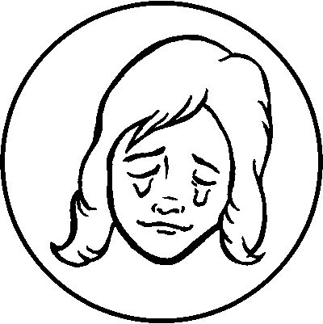
ペットへの愛
老犬を飼っている家族の元を訪れた獣医は、その犬が治る見込みがないため、最期の時を一緒に過ごすことを提案する。「なぜ動物は人間より短命なのだろう」と悲しむ大人たちに、飼い主夫婦の幼い息子が「僕は、なぜだか知ってるよ」と話し始める。
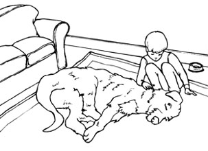
DLChapter01_track03
When I was an animal doctor, I had been called to*1examine a 7-year-old*2Irish wolfhound named Belker. The dog's owners, Ron, his wife, Lisa, and their little boy, Shane,*3were all very attached to Belker and they were hoping that Belker would get better.
I examined Belker and found he*4was dying. I told the family we couldn't do anything for Belker, and advised them to watch over him and to be with him at the end of his life.
After hearing my words, Ron and Lisa told me they thought it would be good for 6-year-old Shane to watch Belker's last moments. They felt that Shane might learn something from the experience.
I started to feel sad when Belker's family surrounded him. Shane seemed so calm, while he was*5patting the old dog*6for the last time,*7that I wondered if he understood what was happening. That night, Belker died*8in peace.
The little boy seemed to accept Belker's death*9without any difficulty. We sat together talking about the sad fact that animal lives are shorter than human lives. Shane, who had been listening quietly, spoke in a high voice, "I know why."
We were all surprised and*10turned to him. What he said next surprised me*11even more.
He said, "People are born*12so that they can learn how to live a good life --- like loving everybody all the time and being nice, right?" The 6-year-old continued, "Well, dogs already know how to do that, so they don't have to stay as long as people."
264words
The point of this story
DLMP3_03
Children's*13ways of thinking are often interesting to adults. Some of them are wonderful. Shane's words in this story make us think about ourselves. Are we trying to learn how to live a good life --- like loving everybody all the time and being nice?
私が獣医だったとき、ベルカーという7歳のアイリッシュ・ウルフハウンドの診察に呼び出されました。飼い主のロン、妻のリサ、幼い息子のシェーンは皆、ベルカーをとてもかわいがっていて、ベルカーが良くなることを願っていました。
ベルカーを診察してみると、彼がもう長くはないことが分かりました。ベルカーのためにできることは何もないと家族に伝え、ベルカーを見守り、最期の時を一緒に過ごすことを提案しました。
私の言葉を聞いて、ロンとリサは、6歳のシェーンにとって、ベルカーの最期を見守ることは良いことだと思うと言いました。彼らは、シェーンがその経験から何か学ぶかもしれないと考えたのでした。
家族がベルカーを囲むと、私は悲しみが込み上げてきました。お別れにその老犬をなでていたシェーンがあまりにも落ち着いているように見えたので、彼は状況を理解しているのだろうかと思いました。その日の夜、ベルカーは静かに息を引き取りました。
幼い男の子は、難なくベルカーの死を受け入れているように見えました。私たちは一緒に座り、動物の一生が人間の一生よりも短いという悲しい事実について話し合いました。シェーンは、静かに聞いていましたが、高い声で言いました。「僕は、なぜだか知ってるよ」
私たちは皆驚いて、彼の方を見ました。次に彼の口から出た言葉に、私はさらに驚きました。
彼は言いました。「人間は、いつもみんなを大好きでいたりとか、優しくしたりとか、良い生活の送り方を勉強できるように生まれるんだよね？」。6歳の男の子は続けました。「ほら、犬はもうその方法を知ってるでしょ。だから人間ほど長く生きなくていいんだよ」
このストーリーのポイント
子どもたちの考え方は、大人にとって興味深いものであることが多いですね。中には、素晴らしいものもあります。この話に登場するシェーンの言葉は、私たちに、自分自身について考えさせてくれます。私たちは、いつも全ての人を愛したり、優しくしたりというような、良い生活の送り方を学ぼうと努力しているでしょうか？
Precious Little Time
ほんの少しの貴重な時間
子から親への愛
「パパ、１時間にいくらお金を稼ぐの？」という5歳の息子の突飛な質問に、父親は「20ドルだ」と答える。すると今度は、「僕に10ドル貸してくれる？」とお願いされる。その意図を測りかね、父親はつい息子を叱りつけてしまうが......。
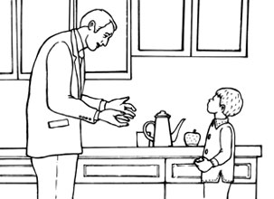
DLChapter01_track04
A man came home from work late. He was tired and got angry because he found his 5-year-old son waiting for him at the door.
"Daddy, may I ask you a question?"
"You should be in bed! What is it?" replied the man.
"Daddy, how much money do you*1make an hour?"
"Why are you asking me that? It's*2none of your business!" the angry man said.
"I just want to know. Please tell me. How much do you make an hour?" asked the little boy.
"*3If you must know, I make $20 an hour."
"Oh," the little boy replied with his head down. He looked up and said, "Daddy, may I borrow $10, please?"
The father got even angrier. "Is that why you wanted to know how much money I make? So you can get some to buy a*4silly little toy or something? Go to your room and go to bed. I work long, hard hours every day and I don't want to waste my money."
The little boy quietly went to his room and shut the door.
The man thought about the little boy's questioning, and then he sat down and started to*5get even madder. "Why did he ask such questions? Why was he so selfish?"
After a while, the man calmed down, and started to think he may*6have been a little hard on his son. Maybe there was something he really needed to buy with that $10 and he really didn't*7ask for money very often. The man went to the little boy's room and opened the door.
"Are you asleep?" he asked.
"No, Daddy, I'm awake," replied the boy.
"I've been thinking, maybe I was too hard on you earlier." said the man. "I'm sorry. It's been*8a long day and I*9took my anger out on you. Here's that $10 you wanted."
The little boy sat straight up with a smile. "Oh, thank you, Daddy!" he yelled. Then he reached under his pillow and*10pulled out some more*11crushed bills. The man started to get angry again because he saw the boy already had plenty of money.
The little boy slowly*12counted out his money, then looked up at his father.
"Why did you want more money if you already had some?" the father complained.
"Because I didn't have enough, but now I do," the little boy replied.
"Daddy, I have $20 now. Can I buy an hour of your time? Please come home early tomorrow. I want to have dinner with you."
The father*13was crushed and he put his arms around his little son.
436words
The point of this story
DLMP3_04
Children always want to stay with their parents. But every day parents are very busy with their jobs, housework and so on. And many parents think they do all those things for their children. This father understood the true feelings of his son by talking with him. This story tells us what is the most important when you take care of your children.
ある男性が、夜遅く仕事から帰宅しました。彼は疲れていました。そして、5歳の息子が玄関で待っていたのに気付くと怒りました。
「パパ、ちょっと聞いてもいい？」
「寝ていないとだめだろう！ 何だ？」と男性は答えました。
「パパ、1時間にいくらお金を稼ぐの？」
「どうしてそんなことを聞くんだ？ そんなこと、おまえに関係ないだろう！」と男性は怒って言いました。
「ただ知りたいんだ。教えてよ。1時間にいくら稼ぐの？」と幼い男の子は尋ねました。
「どうしても知りたいなら言うが、1時間に20ドルだよ」
「そう」と幼い男の子はうつむいて答えました。顔を上げた彼はこう言いました。「パパ、僕に10ドル貸してくれる？」
父親の怒りはさらに増しました。「私がいくら稼いでいるのか、おまえが知りたがった理由はそれか？ くだらないおもちゃか何かを買うためにお金をもらおうってことか？ 自分の部屋に行って寝なさい。私は毎日長い時間必死に働いているんだぞ。お金を無駄にするのはごめんだ」
幼い男の子は、そっと自分の部屋へ行き、ドアを閉めました。
男性は腰を下ろし、幼い男の子の質問について考えていると、ますます頭にきました。「どうしてあの子はあんな質問をしたのだろう？ 何であんなわがままを言ったのだろう？」
しばらくすると男性は落ち着き、息子にちょっときつく当たってしまったのではないかと思い始めました。もしかしたら、その10ドルで本当に買わなくてはならないものがあったのかもしれない。それに、あの子がお金を欲しがるなんてめったにないことだ。男性は幼い男の子の部屋へ行き、ドアを開けました。
「もう寝ているか？」と彼は尋ねました。
「ううん、パパ、起きてるよ」と男の子は答えました。
「ずっと考えていたんだが、さっきは厳し過ぎたかもしれないね」と男性は言いました。「すまない。今日は大変な一日だったから、おまえに八つ当たりをしてしまったんだ。ほら、おまえの欲しがっていた10ドルだよ」
幼い男の子は、笑顔で座り直しました。「わあ、ありがとう、パパ！」と彼は声を上げました。そして枕の下に手を伸ばし、しわくちゃのお札を数枚取り出しました。男の子がすでにお金をたくさん持っているのを見た男性は、また怒りが湧いてきました。
幼い男の子はゆっくりとお金を数え上げると、父親を見上げました。
「すでにお金があるのに、どうしてもっと欲しがったりしたんだ？」と父親は文句を言いました。
「足りなかったからだよ。でも今はあるよ」と幼い男の子は答えました。
「パパ、今ここに20ドルあるんだ。パパの時間を1時間買える？ 明日は早く帰ってきて。僕、一緒に晩ご飯が食べたいの」
父親は打ちひしがれ、幼い息子を両腕で抱き締めました。
このストーリーのポイント
子どもはいつも親と一緒にいたいと思っています。しかし、親は毎日、仕事や家事などに追われています。そして、多くの親が、そういったことの全てを、子どものためにやっていると思っています。この父親は息子とのやりとりを通して、息子の本当の気持ちに気付きました。この話は、子どもを育てる上で最も大切なことを私たちに教えてくれます。
A Letter to a Silent Brother
物言わぬ弟への手紙
家族愛
一人っ子のサラは、待望の弟の誕生をとても喜ぶ。しかし、その弟に、生後間もなく重病との診断が下る。それからというもの、両親の愛情を一身に受ける弟を見るうちに、サラの彼に対する感情は変化していく......。
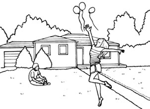
DLChapter01_track05
Dear Patrick,
I was an only child who had everything I wanted, but sometimes I was lonely. So, when Mom told me that I was going to have a brother, I was very happy. When you were born, and I looked at your tiny hands and feet, I saw how beautiful you were. We took you home and I happily showed you to my friends.
When you were 5 months old, you didn't seem to move much, and your cry sounded unusual. So we took you to many doctors. The 13th doctor who looked at you quietly said you had a sickness that would make you very weak. When I asked what that meant, he looked at me with pity and softly said, "Your brother will never walk nor talk."
The doctor told us that only one in 50,000 babies had that*1condition. Mom was shocked and I was very upset. When we went home, Mom held you in her arms and cried. I didn't want my friends to know about you, so I decided to ignore you. I tried not to love you as you grew.
Mom and Dad*2showered you with love and attention and that made me*3bitter. And as the years passed, that feeling*4turned to anger,*5and then hate.
Mom never gave up on you. You could still not walk when you were 4, but Mom believed that one day you would walk. So she'd put you on the grass*6with only your pants on. Mom hoped that you would walk to avoid the grass touching against your skin. I would sometimes watch from my bedroom window and laugh at you. You failed many times, but Mom never gave up.
One day, Mom and Dad saw you*7pull yourself up and walk off the grass slowly. At that moment, they were crying and holding each other tightly. I watched from the window.
*8From then on, I would sometimes see you walk outside, smell the flowers, look at the birds, or just smile. I realized no matter how much I tried to hate you, I couldn't. I had grown to love you.
Soon after that, we became friends with each other again. I gave you all the love that a sister could give to her brother.
On your 10th birthday, you had bad headaches. Soon you got really sick and had to stay in the hospital. The doctor said you had*9leukemia.
Just a month before you died, you made me*10draw up a list of things you wanted to do when you got out of the hospital. Two days after the list was completed, you asked the doctors to send you home. There, we ate ice cream and cake, ran across the grass, went fishing, took pictures of each other and flew balloons.
I remember the last conversation that we had. You said that if you died, and if I needed help, I could send a note to you in heaven by tying it on the string of a balloon and letting it fly.
Later that night, at the hospital, you tried to talk but the words wouldn't come. I know what you wanted to say. And for the last time, I said, "I'll always love you and I will never forget you. Don't be afraid."
Then, I watched the bravest boy I had ever known finally stop breathing. You were finally gone, leaving us behind.
You showed me a world full of love and caring. You showed me how to love life. And you made me realize that the most important thing in life is to continue loving without asking why or how. Thank you for everything, my little brother.
Your sister,
Sarah
619words
The point of this story
DLMP3_05
You may sometimes feel upset or angry about something. Also, you may sometimes feel lonely. Like Sarah's brother, accept things*11happening to you as they are and accept yourself as you are. Then you can be a brave person and make a world full of love and caring.
パトリックへ
私は一人っ子で、欲しいものは何でも手に入ったけど、時々寂しかったの。だから弟ができるってママが教えてくれたとき、とてもうれしかったわ。あなたが生まれたとき、その小さな手足を見て、何てかわいらしいのかと思ったのよ。私たちはあなたを家に連れて帰り、私はうれしくて友達にあなたを見せたの。
生後5カ月になっても、あなたはあまり動かないようだったし、泣き声もおかしかった。だから、私たちはあなたをいろんなお医者様のところへ連れて行ったの。あなたを診察した13人目のお医者様は、あなたがとても弱くなってしまう病気にかかっているって、静かに言ったわ。私がどういうことか聞いたら、彼は気の毒そうに私を見てそっと言ったの。「あなたの弟さんは、歩くことも話すこともできないんだよ」ってね。
そのお医者様によれば、こういう症状の赤ちゃんは5万人に一人だけということだったの。ママはショックを受けていたし、私は気が動転してしまった。家に帰ると、ママは両腕であなたを抱き締めて泣いたわ。私はあなたのことを友達に知られたくなかったから、あなたを無視することにしたの。あなたが大きくなっても、私はあなたを愛さないようにしたわ。
ママとパパはあなたにたくさんの愛情を注ぎ、世話を焼いたから、私はつらかった。そして何年かたつと、その気持ちは怒りに変わり、さらには憎しみになったわ。
ママは、決してあなたのことを諦めなかった。あなたは4歳になってもまだ歩くことができなかったけど、ママはいつかあなたが歩くと信じていたわ。だからママは、あなたをパンツ一枚で芝生の上に置いたりしたのよ。ママは、あなたが芝生の感触を嫌がって、もしかして歩くんじゃないかって、願っていたのね。私は時々寝室の窓からあなたを見て、笑ったものだわ。あなたが何度失敗しても、ママは絶対に諦めなかった。
ある日、ママとパパはあなたがまっすぐ立って、ゆっくりと芝生の上を歩きだすのを見たの。その瞬間、彼らは泣きながら固く抱き合っていたわ。私は窓から見たのよ。
そのときから、私は時々、あなたが外を歩いたり、花の香りをかいだり、鳥を見たり、ただほほ笑んだりしているのを見てきたわ。私は、どんなにあなたを嫌いになろうとしても、嫌いになれないってことに気付いたの。私はあなたを愛するようになっていた。
間もなくして、私たちは再び仲良くなった。私はあなたに、姉が弟に与えられる愛情を全て与えたわ。
10歳の誕生日に、あなたはひどい頭痛に襲われたわね。すぐにすごく具合が悪くなって、入院しなければならなかった。お医者様は、あなたが白血病だって言った。
あなたが亡くなるちょうど一カ月前、退院したらしたいことのリストを、あなたに言われて作ったわ。リストが完成した二日後、あなたはお医者様たちに家に帰りたいって頼んだ。家では、私たちはアイスクリームやケーキを食べたり、芝生の上を走ったり、釣りに行ったり、写真を撮り合ったり、風船を飛ばしたりしたわね。
最後にした会話を覚えているわ。あなたはこう言った。もし自分が死んだら、助けが必要なときには、風船のひもに結んで飛ばせば、天国にいる自分に手紙を送ることができるって。
その日の夜遅く、病院であなたは話そうとしたけど、言葉にならなかった。あなたが何を言いたかったのか分かっているわ。そして最後に私は言ったの。「いつもあなたを愛しているし、絶対にあなたを忘れない。心配しないで」
そして、私が知る中で最も勇敢な少年が、ついに呼吸を止めるのを見たわ。あなたは私たちを置いて、ついに逝ってしまった。
あなたは私に愛と思いやりに満ちた世界を見せてくれた。人生の愛し方を教えてくれた。そしてあなたは、人生で一番大切なのは、理由や方法なんか問わないで愛し続けることだと、私に気付かせてくれた。全てのことにありがとう、私のかわいい弟。
あなたの姉
サラ
このストーリーのポイント
何かに心を乱されたり、腹を立てたりすることがあるでしょう。また、寂しいと感じることもあるでしょう。サラの弟のように、自分に起こることや自分自身をあるがままに受け入れてみてください。そうすれば、あなたが勇気ある人となり、愛と思いやりに満ちた世界を作ることができるでしょう。
Chapter 2
前向きになる話
Keep Your Goals in Sight
ゴールは見えるところに
成功の秘けつ
イギリス海峡を泳いで渡ることに成功した女性が、今度はカタリナ海峡横断に挑戦する。濃い霧に視界をさえぎられながらも、女性は母親や指導者からの声援を受けながら泳ぎ続ける。十数時間の奮闘の結果は、果たして......？
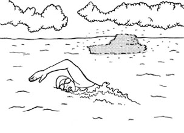
DLChapter02_track01
When she looked ahead, Florence Chadwick saw*1nothing but a*2solid wall of fog. Her body couldn't feel anything. She had been swimming for nearly 16 hours.
She was already the first woman to have swum*3the English Channel in both directions. Now, at 34, her goal was to become the first woman to swim from*4Catalina Island to*5the California coast.
On that 4th of July morning in 1952, the sea was like an ice bath, and the fog was so thick that she could hardly see her support boats.*6Sharks approached her,*7only to be*8driven away by*9rifle shots. Against the cold sea, she struggled on ---*10hour after hour --- while millions watched on national television.
Near Florence in one of the boats, her mother and her teacher kept encouraging her. They told her she didn't have far to go. But all she could see was fog. They*11called out to her not to give up. She never had ... until then. With only half a mile to go, she asked to be*12pulled out.
Several hours later, still she was recovering from the cold swim, but she told a reporter, "Look, I'm not excusing myself, but if I could have seen land, I might have*13made it." It was neither because she was tired nor because she was cold that she was defeated. It was the fog. She was unable to see her goal.
Two months later, she tried again. This time, the fog was as deep as the last time, but she swam with her goal clearly pictured in her mind. She knew that somewhere behind that fog was land, and this time she made it. Florence Chadwick became the first woman to swim*14the Catalina Channel. She swam faster than the fastest man*15by two hours!
300words
The point of this story
DLMP3_06
Sometimes we see our goals far away in our life. Also, sometimes we fail on our way to the goals. Even then, we can approach our goals step by step if we see our goals clearly in our mind and keep working toward them. We can learn this from this woman's attitude.
フローレンス・チャドウィックが前方に目を向けると、分厚い霧の壁しか見えませんでした。彼女の体は何も感じることができませんでした。彼女は16時間近く泳いでいました。
すでに彼女は、イギリス海峡を両岸から横断泳した最初の女性でした。34歳になった今、彼女の目標は、カタリナ島からカリフォルニアの海岸まで泳ぐ最初の女性になることでした。
1952年7月4日の朝、海は氷風呂のようでした。とても深い霧が立ち込めていて、彼女にはサポートボートがほとんど見えませんでした。サメが彼女に近づいても、結局ライフルの発砲で追い払われるのがおちでした。何百万人もの人々が全国放送のテレビで見守る中、彼女は冷たい海に逆らって、何時間も奮闘し続けました。
フローレンスの近くのボートでは、母親と指導者が彼女を励まし続けました。彼らは、先はもうそんなに遠くないと彼女に伝えました。しかし、彼女には霧しか見えませんでした。彼らは彼女に諦めるなと叫びました。彼女は諦めたことなどありませんでした、そのときまでは......。あとたった半マイルのところで、彼女は引っぱり上げてほしいと頼みました。
数時間後、彼女はまだ冷たい海での泳ぎから回復しきっていませんでしたが、ある記者に語りました。「ねえ、言い訳じゃないけれど、もし陸が見えていたら、成功していたかもしれない」。彼女が挫折したのは、疲れていたからでも寒かったからでもありませんでした。霧のせいでした。彼女にはゴールが見えなかったのです。
二カ月後、彼女は再び挑戦しました。霧は前回と同じくらい濃かったのですが、今回はゴールを心の中にはっきりと描いて泳ぎました。彼女はあの霧の向こうのどこかに陸があることが分かっていたので、今回は成功したのです。フローレンス・チャドウィックは、カタリナ海峡を泳ぎ切った最初の女性になりました。彼女はそれまで最も速かった男性より、2時間も早く泳ぎました！
このストーリーのポイント
人生において、目標がはるか遠くに感じられることがあります。また、目標に向かう途中で失敗することもあります。そんなときでも、心の中にしっかりと目標を見据え、それに向かって努力を積み重ねることで、着実に目標に近づくことができるのです。この女性の姿勢から、私たちはこのことを学ぶことができます。
Become a Lake
湖になりなさい
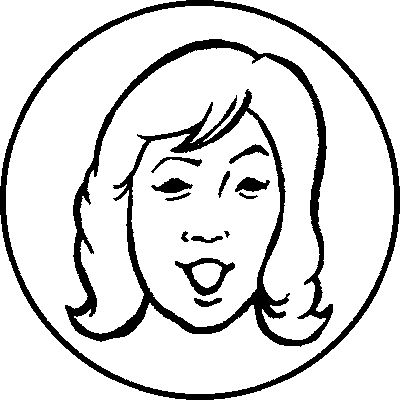
生きる知恵
不幸な若者が、人生を変えるためのアドバイスを求めて、ある年配の教師を訪ねる。教師は若者に、水の入ったグラスに少量の塩を加えて飲むように言う。それから、今度は同じく少量の塩を湖に入れるように言うのだが、その真意は......？
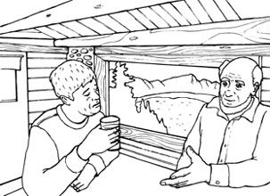
DLChapter02_track02
Once an unhappy young man went to an old teacher and told him that he had a very sad life and wanted to know how he could change it.
The old teacher told the unhappy young man to put*1a little bit of salt in a glass of water and then to drink it.
"How is it?" the teacher asked.
"Awful," the young man said,*2shaking his head.
The teacher laughed and then asked the young man to take another little bit of salt and put it in a lake. The two men walked in silence to the local lake and then the young man threw the salt into the lake.
The old man said, "Now drink from the lake."
*3As drops of water were falling from the young man's chin, the teacher asked, "How is it?"
"Good!" said the young man.
"Can you taste the salt?" asked the teacher.
"No." said the young man.
The teacher sat next to the*4troubled young man, took his hands, and said, "The pain of life is pure salt;*5no more, no less. The amount of pain in life remains the same, exactly the same. But the amount we taste the 'pain'*6depends on the bowl we put it into. So when you are in pain, the only thing you can do is to start taking a large view of things. Stop being a glass. Become a lake."
235words
The point of this story
DLMP3_07
When you are sad or having a hard time, you may feel so pained that you may try to solve the problems that cause you the pains. But you may find it difficult to solve them. What should you do at a time like this? If you look at your problems or pains from different*7points of views, you will feel less pained. So,*8widen your horizons!
昔、ある不幸な若者が年配の教師のところへ行き、自分はとても悲しい人生を送っていて、それを変える方法を知りたいと伝えました。
年配の教師はその不幸な若者に、グラスの水に塩を少量入れて、それを飲むように言いました。
「どうだ？」と教師は尋ねました。
「ひどい味です」と首を横に振りながら、若者は言いました。
教師は笑うと、今度は若者にもう一度塩を少量取り、それを湖に入れるよう言いました。二人は黙って近くの湖まで歩いていきました。それから、若者は塩を湖に投げ入れました。
年配の男性は言いました。「さあ、湖の水を飲んでみなさい」
若者があごから水滴を垂らしていると、教師は尋ねました。「どうだ？」
「おいしいです！」と若者は言いました。
「塩の味がするかな？」と教師は尋ねました。
「しません」と若者は言いました。
教師は悩んでいる若者の隣に座り、彼の手を取って言いました。「人生の苦しみは混じり気のない塩なのだ。それ以上でもそれ以下でもない。人生の苦しみの量はいつも同じ、全く同じなんだよ。しかし、私たちが感じる『苦しみ』の量は、それを入れる器次第だ。だから、つらいときにできることはただ一つ、物事を広い視野で捉え始めることだ。グラスでいるのをやめなさい。湖になりなさい」
このストーリーのポイント
悲しいときやつらいとき、つらく感じるあまり、つらさの原因となる問題を解決しようとするかもしれません。しかし、解決は困難だと感じるかもしれません。そのようなとき、あなたは何をするべきでしょう？ もしあなたが、別の観点から問題やつらいことを捉えれば、つらさを和らげることができるのではないでしょうか。さあ、視野を広げましょう！
Self-Confidence
自信
成功の秘けつ
多額の借金を抱えた経営者が公園で思い悩んでいると、ある老人が話を聞いてくれる。別れ際に老人は、経営者に50万ドルの小切手を渡し、「一年後に返してくれればいい」と言って立ち去るが、小切手に書かれていた名前は何と......。
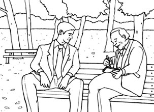
DLChapter02_track03
A business owner borrowed much more money than he could pay back. He didn't know what to do.
Some people were demanding the money back from him, others were demanding payment. He sat on a park bench, with his head in his hands and wondered if anything could save him from losing his business.
Suddenly an old man appeared before him. "I can see that something is troubling you," he said.
After he listened to the business owner's story, the old man said, "I believe I can help you."
He asked the man his name,*1wrote out a check, and pushed it into his hand. He said, "Take this money. Meet me here in exactly one year, and you can pay me back then."
Then he turned and disappeared as quickly as he had come.
The business owner saw in his hand a check for $500,000 signed by John D. Rockefeller, one of the richest men in the world! He said to himself, "My*2money worries have disappeared*3in an instant!"
However, the owner decided to put the check in his safe. He thought that just knowing it was there might give him the strength to save his business.
With new*4determination, he began working hard again. He*5persuaded his business partners to let him pay the money back later. He was willing to take any job. Within a few months, he paid back all the money and even started making money once again.
Exactly one year later, he returned to the park with the check. As he promised, the old man appeared. But just when he was about to hand back the check and tell his success story, a nurse came running up and caught the old man.
"I'm so glad I caught him!" she cried. "I hope he hasn't been giving you a bad time. He's always escaping from the*6rest home and telling people he's John D. Rockefeller."
The surprised business owner just stood there without saying a word. All year long he'd been*7wheeling and dealing, buying and selling, believing he had $500,000 behind him.
Suddenly, he realized that it wasn't the money that had turned his life around. It was his new self-confidence that had given him the power to achieve anything.
378words
The point of this story
DLMP3_08
With mental support from someone such as our family or a loved one, we can work harder to achieve our goals. But even if we don't have that support, there is something that can help us: self-confidence. This business owner achieved his goal after he had worked hard, while he kept the check as his mental support. His self-confidence brought him success.
返済できる額よりもずっと多いお金を借りてしまった経営者がいました。彼はどうすべきか分からずにいました。
彼にお金を返すよう要求する者もいれば、支払いを請求する者もいました。彼は公園のベンチに座り、両手で頭を抱えながら、何とか会社を失う危機から救ってくれる何かがないだろうかと考えていました。
突然、彼の前に一人の老人が現れました。「何かお困りのようだね」と彼は言いました。
経営者の話を聞くと、老人は言いました。「わしはあんたのお役に立てると思うがね」
彼は男性に名前を尋ね、小切手を切ると、それを男性の手に押し付けました。彼は言いました。「このお金を受け取りたまえ。ちょうど一年後、ここへわしに会いに来て、そのときにお金を返してくれればいいから」
そして彼は背を向け、現れたときと同じくらい素早く姿を消しました。
経営者は自分の手に、当時世界で最も裕福な人物の一人であったジョン・D・ロックフェラーが署名した50万ドルの小切手があるのを見ました！ 彼は独り言を言いました。「金の悩みが一瞬で消えた！」
しかし、経営者は小切手を金庫の中にしまっておくことに決めました。それがあると思うだけで、会社を守る力が湧いてくるかもしれないと彼は思いました。
新たな決意とともに、彼は再び必死に働き始めました。事業のパートナーたちには、お金は後日返済させてほしいと説得しました。彼はどんな仕事も進んで引き受けました。数カ月のうちに、彼は全てのお金を返済し、さらにもう一度稼ぎ始めました。
ちょうど一年後、彼は小切手を持ってあの公園へ行きました。約束したとおり、老人は現れました。しかし、小切手を返して自分の成功談を話そうとしたまさにそのとき、看護師が駆け寄ってきて老人を捕まえました。
「良かった、やっと捕まえたわ！」と彼女は叫びました。「あなたに嫌な思いをさせていなければいいのですが。この人はいつも療養施設から抜け出して、自分がジョン・D・ロックフェラーだと言っているんですよ」
驚いた経営者は言葉もなく、ただそこに立ち尽くしました。一年の間ずっと、彼は自分には50万ドルの後ろ盾があるのだと信じ込んで、精力的に動き、取引をしていたのです。
突然彼は、自分の人生を好転させたのはお金ではなかったことに気付きました。彼に何かを成し遂げる力を与えてくれたのは、彼自身の新たな自信でした。
このストーリーのポイント
家族や愛する人からの精神的な支えがあれば、人は目標を達成するためにより一層努力することができます。しかし、そのような支えがない場合でも、私たちの助けになるものがあります。それが、自信です。この経営者は、小切手を心の支えとしてとっておき、懸命に働いた後に目標を達成しました。自信が成功をもたらしてくれたのですね。
The Trouble Tree
苦労の木
生きる知恵
「私」は家の修繕のために大工を雇うが、初日はいくつものアクシデントが重なり、仕事にならなかった。大工を家まで送り、二人で玄関へ向かう途中、彼は小さな木の前で立ち止まり、両手で枝の先に触れる。その行為の意味とは......？
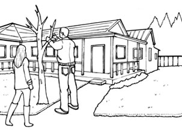
DLChapter02_track04
The carpenter I hired to help me*1renovate an old house had a*2rough first day on the job. A*3flat tire made him an hour late for work, his*4electric saw stopped working, and then his old truck*5refused to start.
That evening, as I drove him home, he sat in his seat quietly. After we arrived at his house, he invited me in to meet his family. When we walked toward the front door, he stopped at a small tree*6for a short period and touched the tips of the branches with both hands.
When he opened the door, his mood completely changed. His dark face was smiling and he held his two small children tightly and gave his wife a kiss.
Afterward, as he walked me to the car, I asked him why he had touched the tree.
"Oh, that's my trouble tree," he replied. "I know I*7can't help having troubles on the job. But one thing is*8for sure: --- troubles don't belong in the house with my wife and my children. So I just hang them up on the tree every night when I come home. Then in the morning I pick them up again."
"The funny thing is," he smiled, "when I come out in the morning to pick them up, there are never as many as I remember hanging up the night before."
230words
The point of this story
DLMP3_09
Sometimes things go wrong even if we do our best. Maybe we feel down if we fail in work or school. Troubles can happen in life. So it's not a good idea to keep worrying. At the end of the day, why don't you try pushing your cares away and*9resetting your feelings? Then your heart will surely feel lighter the next day.
古い家の修繕を手伝ってもらうために雇った大工は、不運な初仕事の一日を送りました。パンクしたタイヤのせいで仕事が1時間遅れ、チェーンソーは動かなくなり、その上古いトラックはびくともしなくなりました。
その夜は私が、彼を車で家まで送りましたが、彼は黙ってシートに座っていました。彼の家に到着すると、彼は家族に会わせようと私を招き入れてくれました。玄関に向かって歩いていく途中、彼は少しの間小さな木のところで立ち止まり、両手で枝の先に触れました。
ドアを開けると、彼の雰囲気は一変しました。暗かった彼の顔は笑顔になり、二人の小さい子どもをぎゅっと抱き締め、妻にキスをしました。
その後、彼が私を車まで歩いて見送ってくれたとき、私は彼が木に触れた理由を尋ねました。
「ああ、あれは私の苦労の木です」と彼は答えました。「仕事に苦労は付き物だということは、よく分かっています。しかし、一つ確かなことがあります―苦労は、妻や子どもたちがいる家には似つかわしくありません。だから、毎晩家に帰ると、あの木に苦労を引っ掛けておくのです。そして、朝になると、またそれらを引き取るのです」
「不思議なことに」と彼はほほ笑みながら言いました。「朝取りにくるときには、前の晩に掛けたほどには大して引っ掛かっていないんですよ」
このストーリーのポイント
最善を尽くしてもうまくいかないこともあるでしょう。職場や学校で失敗をすれば、落ち込むでしょう。人生に悩みは付き物です。ですから、悩み続けることは良い考えではありません。一日の終わりには、悩み事はどこかへ追いやって、いったん気持ちをリセットしてみては？ そうすれば、次の日はきっと心が軽くなっているはずです。
Chapter 3
考えさせられる話
The Cookies
クッキー
生きる知恵
空港で飛行機の搭乗を待っていた女性が、買ったばかりのクッキーの袋に手を伸ばす。すると、横に座っている男性も彼女の食べている袋に手を伸ばし、クッキーを食べ始める。彼女が一枚食べると男性も一枚食べ、クッキーはとうとう最後の一枚に......。
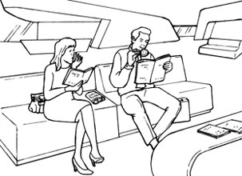
DLChapter03_track01
A young lady was waiting for her flight in a*1boarding area of a big airport.
She had to wait for many hours, so she decided to buy a book to pass the time. She also bought a bag of cookies. She sat down on a comfortable seat, in the*2VIP room of the airport, to rest and read*3in peace.
A man sat down next to the woman, so that the cookies were between them. He opened his magazine and started reading. When the woman took the first cookie, the man also took one. She was angry but said nothing.
She thought: "*4What a nerve! I should hit him!" And then each time she took a cookie, the man took one too. It made her very angry but she didn't want to*5cause a scene.
When they got to the last cookie, she thought: "Ah, what will this rude man do now?"
Then, the man took the last cookie, divided it in half, and gave one half to the woman. This was too much. She couldn't sit there any longer.
She quickly put away her book, and*6angrily went back to the boarding area. When she finally sat down in her seat on the plane, she looked in her*7purse for her glasses.*8To her horror, she saw her*9untouched bag of cookies. It had not been eaten nor opened!
She felt so ashamed. She realized that she had been completely wrong about the man. She had forgotten that she had put her cookies in her purse.
The man shared his cookies with her, without being angry or*10bitter. It's always easy to see other people's mistakes, but the woman knew she would never judge people so quickly in the future.
292words
The point of this story
DLMP3_10
Everyone can*11get someone or something wrong. We may have been angry with someone, believing that we were not doing anything wrong, like this woman. In a situation like this, we should*12doubt whether or not we are doing anything wrong. Or we may not be able to realize how kind that person really is. It's important to look at ourselves, not only at others.
若い女性が、大きな空港の搭乗エリアでフライトを待っていました。
彼女は何時間も待たなければいけなかったので、暇つぶしに本を一冊買うことにしました。クッキーも一袋買いました。休息を取りながら静かに読書をしようと、彼女は空港のVIPルーム内のゆったりとしたシートに座りました。
ある男性が女性の隣に座ったので、二人はクッキーを挟んで座ることになりました。彼は雑誌を開いて読み始めました。女性が最初のクッキーを取ると、男性も一枚取りました。彼女は腹が立ちましたが、何も言いませんでした。
彼女は思いました。「何てずうずうしい！ ひっぱたいてやるところだわ！」。それから彼女がクッキーを一枚取るたびに、男性も一枚取りました。彼女はとても頭にきましたが、騒ぎを起こしたくありませんでした。
クッキーが残り一枚になると、彼女は思いました。「さあ、この失礼な男はどうするかしら？」
すると、男性は最後のクッキーを手に取り、それを半分に割ると片方を女性に渡したのです。もう限界でした。それ以上そこには座っていられませんでした。
彼女は急いで本を片付けると、怒りながら搭乗エリアへ戻りました。ようやく飛行機の自分の席に座ると、眼鏡を取り出そうとハンドバッグの中をのぞき込みました。すると恐ろしいことに、そこにはまだ手付かずのクッキーの袋があったではありませんか。それは食べられてもいなければ、開封されてもいなかったのです！
彼女はとても恥ずかしくなりました。自分が男性のことを完全に誤解していたことに気付きました。彼女は、自分のクッキーをハンドバッグに入れたことを忘れていたのです。
男性は怒ったり苦々しく思ったりせず、自分のクッキーを彼女に分けてくれました。他人の過ちはいつも目に付きやすいものですが、女性は今後決して早合点しないようにしようと悟ったのでした。
このストーリーのポイント
誰もが他人や物事を誤解する可能性があります。私たちも、この女性のように、自分は何も間違っていないと信じて、他人に腹を立てたことがあるかもしれません。このような状況においては、自分が本当に何も間違ったことをしていないのか、疑うべきです。さもないと、相手が本当はどれほど親切なのかに気付くことができないかもしれません。他人だけでなく、自分自身を見つめることが大切なのです。
Gossip
うわさ話
生きる知恵
ある女性が流した隣人のうわさ話があっという間に広まり、隣人を深く傷つけてしまう。後日、女性は自分が広めたうわさが事実ではなかったことを知る。長老を訪ねて、どうすれば罪滅ぼしができるか教えを請うが......。
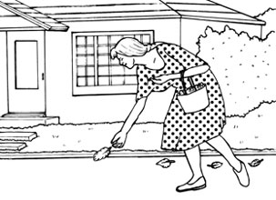
DLChapter03_track02
A woman started gossiping about one of her neighbors. Within a few days the whole community knew the story. The neighbor was deeply hurt and offended. Later the woman responsible for spreading the rumors learned that she had been wrong. She was very sorry and went to a wise old man to find out what she could do to repair the damage.
The wise old man said, "Go and get a chicken. Then*1pluck its feathers and drop them*2one by one along the road."
Although she was surprised by his advice, the woman did what the wise old man had told her to do.
The next day the wise old man said, "Now go and collect all the feathers you dropped yesterday and bring them back to me."
The woman followed the same route, but*3to her disappointment, the wind had blown nearly all of the feathers away. After searching for hours, she returned to the wise old man with only three in her hand.
"You see," said the wise old man, "it's easy to drop them, but it's impossible to get them back. It's the same with gossip. It doesn't take much to spread a rumor, but once you do, you can never get it back."
208words
The point of this story
DLMP3_11
You know the saying, "*4There is no use crying over spilt milk." And there is a famous phrase in a play: "*5What's done cannot be undone." The gossip the woman in this story spread cannot be untold. It tells us that we should think about what we are going to do carefully before we do it.
ある女性がある隣人のうわさ話を流しました。その話は、数日で地域中に広まりました。その隣人は深く傷つき、気分を害しました。その後、うわさを広めた張本人である女性は、自分が間違っていたことを知りました。彼女はとても申し訳なく思い、罪滅ぼしのためにできることを見つけようと、長老の元へ行きました。
長老は言いました。「ニワトリを手に入れてきなさい。そして羽をむしり取り、道に沿ってその羽を一枚ずつ落としなさい」
そのアドバイスに驚きながらも、女性は長老に言われたとおりにしました。
翌日、長老は言いました。「今度は、昨日落とした羽を全部拾い集めにいって、私のところへ持ってきなさい」と言いました。
女性は同じ道をたどりましたが、残念ながら、風が羽をほとんど全部吹き飛ばしてしまっていました。何時間も探した末、彼女は三枚だけ手にして長老の元に戻りました。
「お分かりのように」と、長老は言いました。「羽を落とすのは簡単でも、それを取り戻すことは不可能なのです。うわさ話も同じです。うわさを広めるのに大して時間はかかりませんが、一度広めてしまうと、それを取り戻すことは決してできないのです」
このストーリーのポイント
「覆水盆に返らず」ということわざをご存知ですよね。また、「なされたことはなされなかったことにはできない」という有名な戯曲の一節もあります。この話の女性が広めたうわさ話は、話されなかったことにはできないのです。このことから、何かをする前に、自分がしようとしていることについて慎重に考えるべきだということが分かりますね。
A Man and a Starfish
ある男とヒトデ
行動の積み重ね
「私」が海岸を散歩していると、はるか向こうに男性が見える。近づいてみると、彼はかがんでは何かを拾い、それを海に投げることを繰り返している。何をしているのかと尋ねると、男性は......。
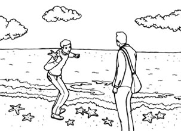
DLChapter03_track03
As I walked along an empty beach one cold, gray morning, I saw a man,*1far in the distance. Slowly we approached each other, and I could*2make out that the man kept*3leaning down, picking something up and throwing it out into the water.*4Time after time he threw things into the ocean.
As we got closer to each other, I could see that he was picking up*5starfish that had*6been washed up on the beach and,*7one at a time, was throwing them back into the water.
I felt puzzled, so I approached the man and asked him what he was doing. "I'm throwing these starfish back into the ocean.*8You see, it is*9low water right now and all of these starfish have been washed up onto the shore. If I don't throw them back into the sea, they'll die up here because they cannot breathe."
"But*10there must be thousands of starfish on this beach," I replied. "You can't possibly get to all of them. There are*11just too many. And this same thing is probably happening on hundreds of beaches all*12up and down this coast.*13Can't you see that you can't possibly*14make a difference?"
The man smiled,*15bent down and picked up another starfish, and as he threw it back into the sea, he replied, "I've made a difference to that one!"
230words
ある寒いどんよりとした朝、人けのない浜辺を歩いていると、はるか遠くに一人の男性が見えました。徐々に互いの距離が縮まると、どうやらその男性が繰り返しかがみ込んでは何かを拾い上げ、海の中にそれを投げ入れているように見えました。彼は何度も何度も、海の中に物を投げ入れていました。
私たちの距離が近づくにつれ、彼が浜辺に打ち上げられたヒトデを拾い上げ、それを一匹ずつ海に投げ返しているのだと分かりました。
戸惑いながら、私はその男性に近づくと何をしているのか尋ねました。「ヒトデを海に投げ返しているんです。ほら、今はちょうど干潮だから、ヒトデたちは全て岸に打ち上げられてしまったんです。私が海に投げて戻してあげないと、ヒトデは呼吸ができずにここで死んでしまいます」
「でも、この浜辺には何千匹ものヒトデがいるはずでしょう」と私は返しました。「全部にはとても手が回らないですよね。とにかく数が多過ぎます。それに、おそらく同じことがこの沿岸のあちこちの何百もの浜辺で起きているでしょうし。とてもじゃないけれど、あなたには変化をもたらすことはできないと思いませんか？」
男性はほほ笑み、かがみ込むともう一匹ヒトデを拾い上げ、それをまた海に投げ返しながら答えました。「私はあのヒトデに変化をもたらしましたよ！」
このストーリーのポイント
解決不可能に見える問題に直面したとき、あなたはどうしますか？ 諦めますか？ たとえ及ぼす影響が小さくとも、一つずつやってみましょう。やるとやらないとでは、大違いです！
The House with the Golden Windows
黄金色の窓の家
真の豊かさ
質素な家に住む女の子は、谷の向こう側にある家を見て、「窓が黄金色に輝くあの家に住むことができたら、どんなにすてきだろう」と夢見ている。ある日、自転車での外出を許された女の子は、谷の向こうにあるあの家に向かう。そこで女の子が目にしたのは......。
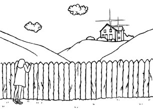
DLChapter03_track04
A poor little girl lived in a small, very*1simple house on a hill. Most days, she played in the house's small garden. As she grew taller, she could see over the garden fence, across the valley to a wonderful house high on a hill. The house had golden windows. The shining windows were so golden that the girl dreamed of how*2magic it would be to live there*3instead of in an ordinary house like hers.
And although she loved her parents and her family, she began to admire the house with the golden windows more and more. It became her custom to*4gaze at the house every day, rain or shine. "What kind of furniture does the house have? Does it have a lot of pretty dresses? I want to go there some day," she thought.
One day, when she was a little older, she asked her mother if she could*5go for a bike ride outside the gate and down the lane. Her mother said she could go, but she made the girl promise not to go too far. The day was beautiful and the girl knew exactly where she was heading! She rode her bike down the lane and across the valley, until she got to the gate of the house with the golden windows, high on the hill.
She leaned her bike*6against the*7gate post, and looked at the path that*8led to the house, and then at the house itself. But, oh, the windows were all plain and rather dirty, and they were reflecting nothing but the sad neglect of a house that had been forgotten.
The girl turned with a broken heart, and got on her bike. As she*9glanced up, she saw a surprising sight. There, across the valley, was a little house and its windows were bright gold as the sun shone down ... on her little home.
She realized that she had always been living in a house with golden windows and that all the love and care she found there was what made her home the "golden house." Everything she had always wanted was right there*10in front of her nose.
362words
The point of this story
DLMP3_13
You may not think much about the things and the people around you. But if you go a little farther away from them and see them from outside, you will find they are much more important than you thought.*11What other people have may seem better than what you have, but it's*12not always so. How about looking at the things and the people around you again?
ある貧しい女の子が、丘の上の小さくてとても質素な家に住んでいました。毎日のように、彼女は家の小さな庭で遊びました。背が伸びると、庭のフェンス越しに、谷の向こうの、丘の上の高いところにあるすてきな家が見えるようになりました。その家には黄金色の窓がありました。その窓があまりに黄金色に輝いていたので、女の子は、自分の家のような平凡な家ではなく、そこで暮らしたらどんなに素晴らしいだろうと夢見ました。
彼女は両親と家族を愛していましたが、あの黄金色の窓の家への憧れは、ますますふくらむ一方でした。晴れの日も雨の日も、毎日その家を眺めることが、すっかり習慣となりました。「あの家にはどんな家具があるのかしら？ きれいなお洋服がいっぱいあるかしら？ いつか、あのすてきな家に行ってみたいな」と思いをはせました。
ある日、少し成長した女の子は、門の外の小道を下って、サイクリングに出掛けてもいいか、母親に尋ねました。母親は行ってもいいと言ってくれましたが、あまり遠くまで行かないことを女の子に約束させました。その日はいい天気で、彼女は自分の目指すところがどこか、はっきり分かっていました！ 女の子は自転車に乗って、小道を下り、谷を越え、とうとう丘の上の高いところにある、あの黄金色の窓の家の門に着きました。
彼女は自転車を門柱に立て掛け、その家まで続く小道に目をやり、そして家そのものを見ました。ところが、何ということでしょう。どの窓もごく普通で、むしろ汚く、忘れられた家の放置されている悲しい姿を映しているだけでした。
女の子はがっかりして引き返し、自転車に乗りました。ふと顔を上げると、驚きの光景がありました。谷の向こう側に小さな家があり、その窓は日に照らされて、鮮やかな黄金色をしていました......それは、彼女の住む小さな家でした。
自分はずっと黄金色の窓のある家に住んでいて、そこに見いだす全ての愛や思いやりが、彼女の家を｢黄金色の家｣にしているのだと、彼女は気付きました。彼女がいつも求めていたものは全て、彼女の目と鼻の先にあったのです！
このストーリーのポイント
あなたは自分の周りのものや人のことをそんなに考えていないかもしれません。しかし、少し離れて外から見ると、それらが思っていたよりもずっと大切であることが分かるでしょう。他人が持っているものは、自分が持っているものより良く見えるかもしれませんが、必ずしもそうではないのです。あなたの周りのものや人のことを、もう一度見直してみてはいかがでしょうか？
The Value of Knowledge
知識の価値
経験と知恵
大型船のエンジンが故障する。船主たちは何人もの専門家に修理を依頼するが、誰も修理方法が分からない。大金を費やした後、彼らはベテランの船大工を探し出す。彼のおかげでエンジンは無事に直るのだが......。
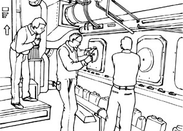
DLChapter03_track05
*1Once upon a time there was a giant ship engine that stopped working. The ship's owners asked many experts to fix it, but none of them could*2figure out how to do it.
Finally, after spending*3hundreds of thousands of dollars, they found an old man who had been building ships since he was very young. The old man agreed to help them. He carried a large bag of tools with him, and when he arrived, he immediately went to work. He examined the engine very carefully,*4from top to bottom. Two of the ship's owners were there. They watched this man and hoped he would know what to do. After*5looking things over, the old man reached into his bag and pulled out a small hammer. He gently tapped something. The engine started*6right away. He carefully*7put his hammer away. The engine was fixed!
A week later, the owners received a bill from the old man for $10,000. "What!" the owners screamed. "He hardly did anything!" So they wrote the old man a note saying, "Please send us a*8detailed bill."
The man sent a bill that*9read,
Tapping with a hammer....................... $2
Knowing where to tap........................ $9,998
200words
The point of this story
DLMP3_14
There is an*10overused phrase that says, "Time is money." Yes, it's true that wasting time can cost us money, but is money that important? After all, not even the richest person can buy even a single second and save it for future use. This story makes us think about valuing things other than money. What is the true value of a person's knowledge or experience?
昔むかし、エンジンが動かなくなった巨大な船がありました。船主たちは多くの専門家に修理を依頼しましたが、誰もエンジンの修理方法が分かりませんでした。
数十万ドルが投じられた後、ついに彼らは、非常に若いときから船を造っている老人を見つけだしました。その老人は、彼らを助けることを引き受けました。彼は道具の入った大きなかばんを持ってきて、到着するとすぐに仕事に取り掛かりました。彼はエンジンを隅々まで、とても注意深く調べました。船主のうち二人がその場にいました。彼らはこの男性を見つめ、修理する方法が見つかることを期待していました。くまなく調べ終わると、老人はかばんの中に手を伸ばし、小さなハンマーを取り出しました。彼は何かを優しく叩きました。するとエンジンはすぐに動き始めました。彼は丁寧にハンマーをしまいました。エンジンは直ったのです！
一週間後、船主たちは老人から1万ドルの請求書を受け取りました。「何だと！」と船主たちは叫びました。「ほとんど何もしていなかったじゃないか！」。そこで彼らは老人に「明細を送ってください」というメモを書きました。
男性は、次のような請求書を送ってきました。
ハンマーで叩いたこと........................... 2ドル
どこを叩くべきかを分かったこと............. 9,998ドル
このストーリーのポイント
「時は金なり」という言葉をよく耳にします。確かに、時間を無駄にすると高くつくことはありますが、お金がそれほど重要でしょうか？ 結局、大金持ちですら1秒たりとも買うことはできませんし、将来使うためにとっておくこともできません。この話から、私たちはお金以外の物事を評価することについて考えることができます。人の知識や経験の本当の価値とはどういったものなのでしょうか？
*1 once upon a time：昔むかし
*2 figure out ...：...を分かる、理解する
*3 hundreds of thousands of ...：何十万もの...
*4 from top to bottom：隅々まで
*5 look ... over：...を調べる、...に目を通す
*6 right away：すぐに
*7 put ... away：...を片付ける、しまう
*8 detailed bill：明細請求書、明細
*9 read：（文字が）...と書いてある
*10 overused：よく使われる
The Important Things in Life
人生で重要なこと
生きる知恵
ある教授が大きな瓶を石で満たして、瓶がいっぱいかどうか学生たちに尋ねる。さらに小石を入れたり、砂を入れたりするたびに、同じことを尋ね......。教授が学生たちに伝えたいこととは？
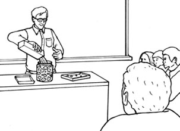
DLChapter03_track06
A professor stood in front of his students, behind a table covered with several boxes of rocks and sand, as well as a very large, empty*1jar. When the class began, without talking, he began to fill the jar with*2ping-pong ball sized rocks.
He then asked the students if the jar was full. They agreed that it was.
So the professor then picked up a box of smaller rocks and poured them into the jar. He shook the jar lightly. The smaller rocks, of course, fell down to the spaces between the larger rocks.
He then asked the students again if the jar was full. They agreed that it was.
The professor picked up a box of sand and poured it into the jar. Of course, the sand filled up the*3remaining spaces in the jar.
He then asked once more if the jar was full. Every student said "Yes."
"Now," said the professor, "I want you to recognize that this jar represents your life. The rocks are the important things --- your family, your partner, your health, your children --- things that if everything else was lost and only they remained, your life would still be full. The smaller rocks are other things that may*4matter --- like your job, your house, your car. The sand is everything else, the*5small stuff."
"If you put the sand into the jar first," he continued, "there is no*6room for the smaller rocks or the larger rocks.*7The same goes for your life. If you spend all your time and energy on the small stuff, you will never have room for the things that are important to you.*8Pay attention to the things that are important to your happiness. Play with your children. Go out together with your partner. Take care of yourself. There will always be time to go to work, clean the house, give a dinner party, or fix the kitchen sink."
"Take care of the rocks first --- the things that really matter. Rank things that are important to you. The rest is just sand."
345words
The point of this story
DLMP3_15
In everyday life, we can't do everything we want to do. Time is limited. So, we should think about what is the most important for ourselves*9on a regular basis. By doing this, we can do the things we think important, even though we can't do everything we want to do.
ある教授が、石や砂の入ったいくつかの箱ととても大きい空の瓶が置かれたテーブルの向こう側に、学生たちを正面にして立ちました。授業が始まると、彼は無言で、ピンポン玉ほどの大きさの石で瓶をいっぱいにし始めました。
そこで彼は、学生たちに瓶の中身がいっぱいかどうか尋ねました。彼らはいっぱいだと同意しました。
続いて、教授はもっと小さい石が入った箱を手に取り、それらを瓶の中に入れました。彼は軽く瓶を振りました。小石はもちろん、大きな石の隙間に落ちていきました。
そこで彼は、再び学生たちに瓶の中身がいっぱいかどうか尋ねました。彼らはいっぱいだと同意しました。
教授は砂が入った箱を手に取り、それを瓶の中へ流し入れました。もちろん砂は、瓶の中にまだ残っていた隙間を埋め尽くしました。
そこで彼はもう一度学生たちに、瓶の中身はいっぱいかどうか尋ねました。彼らは皆「はい」と答えました。
「さて」と教授は言いました。「この瓶があなたたちの人生を表している、ということを知ってほしいのです。石は、家族やパートナー、健康、子どもといった重要なもので、もし他の全てが失われても、それさえ残れば、あなたの人生は充実していると思われるものです。小石は、仕事や家、車など、その他の重要と思われるものです。砂は、その他全てのもの、取るに足らないものです」
「もしあなたがまず、瓶に砂を入れてしまったら」と、彼は話を続けました。「小石や大きな石の入る余地はありません。同じことが人生にも言えます。取るに足らないことに全ての時間やエネルギーを費やせば、あなたにとって重要なものに費やす余地が全くなくなってしまいます。あなたの幸せにとって重要なことに目を向けてください。自分の子どもと遊びなさい。パートナーと一緒に出掛けなさい。自分の体をいたわりなさい。仕事に行ったり、家を掃除したり、ディナーパーティーを開いたり、台所のシンクを直す時間はいつでもあります」
「まず石を、本当に重要なことを大事にしなさい。あなたにとって重要なことに順位を付けるのです。残りは、ただの砂なのですから」
このストーリーのポイント
毎日の生活の中で、私たちはやりたいことが全てできるわけではありません。時間は限られているのです。ですから、日頃から自分にとって何が一番重要なのかを考える必要があります。そうすることで、たとえやりたいことが全部できなくても、重要なことだと心に留めていることは実行できるのです。
Chapter 4
心温まる話
A Little Girl in a Storm
嵐の中の少女
純粋な心
激しい雷雨の午後、下校中の娘が怖い思いをしているのではないかと心配した母親は、娘を迎えに行くべく車に乗り込む。学校へ向かう途中、娘を見つけるが......。
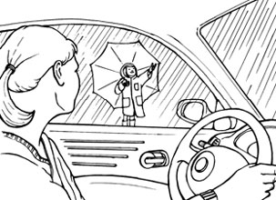
DLChapter04_track01
Every day, a little girl walked to and from school. One morning there were clouds in the sky, but she did*1not know if it would rain, and so she walked to school*2as usual. In the afternoon, the winds grew stronger and a*3thunderstorm began.
The little girl's mother was worried that her daughter would be frightened as she walked home from school. She was also worried about her daughter having to walk home in the heavy thunderstorm. Flashes of lightning cut through the dark sky like sharp knives.*4Rolling thunder followed. Because she was full of concern, the mother got into her car and drove along the route to her child's school.
As she drove, she saw her little girl walking along. At each flash of lightning, the child would stop, look up and smile. Another and another flash followed and with each flash the little girl looked up at the sky and smiled.
The mother lowered the car window and called out to the little girl, "What are you doing? Why do you keep stopping?"
The child answered, "I'm trying to smile. The sky keeps taking my picture."
191words
The point of this story
DLMP3_16
As we grow up, we learn a lot of things around us, and forget how we felt when we didn't know those things. Children's ideas are not limited. Sometimes they tell us about what we can't imagine. Their ideas may be wrong, but it isn't always good to correct them. What would this mother say to her daughter?
毎日、女の子は歩いて学校へ通っていました。ある朝、空には雲が出ていましたが、女の子は雨が降るかどうか分からなかったので、いつも通り歩いて学校へ行きました。午後には風が強く吹き、激しい雷雨になりました。
女の子の母親は、学校から歩いて家へ帰るときに娘が怖い思いをするのではないかと心配しました。それに、娘が激しい雷雨の中を家まで歩かなくてはならないことも気掛かりでした。稲光が鋭いナイフのごとく暗い空を切り裂きました。続いて雷鳴がとどろきました。不安でいっぱいになった母親は車に乗り込み、通学路に沿って走らせました。
運転していると、娘が歩いているのが見えました。稲光が光るたびに娘は立ち止まり、上を向いてほほ笑んでいました。次から次へといくつも稲光が光り、そのたびに女の子は空を見上げてほほ笑みかけていました。
母親は車の窓を下ろし、「何してるの？ どうして立ち止まってばかりいるの？」と女の子に呼び掛けました。
娘は答えました。「にっこりしようと思って。お空がずーっと私の写真を撮っているのよ」
このストーリーのポイント
私たちは成長するにつれ、身の回りのことをいろいろ学び、知らなかったときにどのように感じていたのかを忘れてしまいます。子どもの発想は無限大です。時に彼らは、私たちに想像もつかないようなことを話してくれます。それは間違っているかもしれませんが、それを訂正することが必ずしも良いとは限りません。この話に登場する母親は、娘に何と言うのでしょうね？
True Love
真実の愛
愛と人生
ある朝、医師である「私」の元へ老紳士が受診のためにやってくる。彼にはその後約束があり、急いでいると言う。彼の約束の相手は、老人ホームにいるアルツハイマー病の妻だった。毎朝必ず妻を訪ねるという老紳士に、その理由を尋ねると......。
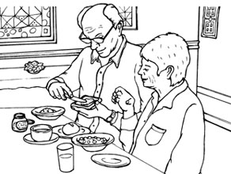
DLChapter04_track02
One busy morning, at around 8:30 a.m., an old gentleman in his 80s arrived to have his*1wounded thumb checked. He said that he was in a hurry as he had another appointment at 9:00 a.m.
I decided to check his wound immediately. I*2took his blood pressure and asked him to sit down. When I saw it, it*3was nearly healed so I only needed to change his*4bandage.
While I was taking care of his thumb, we began to have a conversation. I asked him if he had another doctor's appointment that morning, as he was in such a hurry. The old gentleman told me no, he was in a hurry to get to the*5nursing home to eat breakfast with his wife. I asked about her health. He told me that she had been in the nursing home for a while and that she had*6Alzheimer's disease.
I asked if his wife would be upset if he was a little late. He told me that she didn't even know who he was, and that she had not recognized him for five years. I was surprised, and asked, "Do you still go every morning, even though she doesn't know who you are?"
He smiled as he patted my hand and said, "She doesn't know me, but I still know who she is." I had to*7hold back tears as he left. I thought, "That is the kind of love I want in my life."
True love is neither physical, nor romantic. True love is to accept all that is, has been, will be, and will not be.
269words
The point of this story
DLMP3_17
This story tells that true love is to accept someone's past, present, and future. When you can thank someone who lives with you, and you feel happy to live with that person, the feeling can become true love.
ある忙しい朝の8時30分ごろ、80代の老紳士がけがをした親指を診てもらうためにやってきました。彼は9時に他の約束があるので、急いでいるのだと言いました。
私はすぐに彼のけがを診察することにしました。彼の血圧を測り、座るように促しました。傷を見るとほとんど治っていたので、包帯を取り換えるだけでした。
親指の処置をしている間に、私たちは雑談を始めました。彼があまりにも急いでいたので、今朝は他の病院でも予約があるのかと尋ねました。老紳士は、そうではなく、妻と一緒に朝食をとるために、老人ホームへ行くので急いでいるのだと言いました。私は彼女の健康状態を尋ねました。老紳士によれば、彼女はこのところ老人ホームに入っていて、アルツハイマー病だということでした。
私は、もしあなたが少し遅れたら、あなたの妻は怒るだろうかと尋ねました。すると、妻は夫が誰なのかさえ分からないし、夫のことを五年間認識していないのだと私に言いました。私は驚いて尋ねました。「あなたが誰なのか彼女には分からないのに、それでも毎朝行くのですか？」
彼は私の手を軽くなでながら、ほほ笑んで言いました。「彼女は私のことが分からないけれど、私はまだ彼女が誰だか分かっていますからね」。彼が帰るとき、私は涙をこらえなければなりませんでした。私は思ったのです。「これこそ、私が人生で求めている愛の形だ」
真実の愛とは、肉体的でもロマンチックでもないのです。真実の愛とは、現在、過去、そしてどんな未来も、全て受け入れることなのです。
このストーリーのポイント
この話では、真実の愛とは相手の過去、現在、未来を受け入れることだと書かれています。共に生きる人に感謝し、共に生きることに喜びを感じたとき、その気持ちが真実の愛になりうるのです。
The Teacher and Little Teddy Stoddard
先生とかわいいテディ・スタッダード
大切な存在
トンプソン先生は、他の子どもたちとあまり遊ばず、いつも汚れた服を着ているテディに良い印象を持っていない。しかし、過去の記録からその事情を知り、テディへの接し方を変える。すると彼はみるみる変化し、卒業後も、定期的に手紙で近況と感謝の気持ちを知らせてきて......。
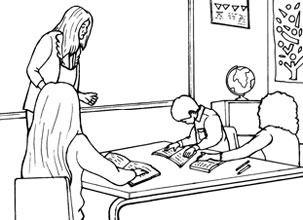
DLChapter04_track03
On the first day of school, Mrs. Thompson said that she loved them*1all the same. But in fact, that was not true, because in the front row there was a little boy named Teddy Stoddard.
Teddy did not play well with the other children, and his clothes were always dirty. Mrs. Thompson knew that she did not actually like him very much.
To find out about the children Mrs. Thompson looked at their school records, but she*2put Teddy's off. However, when she looked over his file at last, she was surprised.
Teddy's first grade teacher wrote, "Teddy is a bright child and*3is fun to be around. He always does his homework and has good manners."
His second grade teacher wrote, "Teddy is an excellent student and liked by his classmates. But he is worried about his mother because she has a*4serious illness that cannot be cured. He seems to be in great difficulties at home."
His third grade teacher wrote, "His mother's death has*5been hard on him. He tries to do his best, but his father has no interest in him. His home life is affecting his school work."
Teddy's fourth grade teacher wrote, "Teddy doesn't show much interest in school. He doesn't have many friends and he sometimes sleeps in class."
Mrs. Thompson realized the problem and she was ashamed of herself. She*6felt worse when her students brought her Christmas presents wrapped in colorful and beautiful paper. Teddy's present was wrapped in simple brown paper. It didn't look nice. Some of the children started to laugh when she found a necklace with some of the stones missing, and a bottle that was one-quarter full of*7perfume. She told the class how pretty the necklace was, and put it on and wore the perfume on her wrist. Teddy Stoddard stayed after school that day and said, "Mrs. Thompson, today you smelled just like my Mom*8used to."
On that very day, she stopped teaching reading, writing and mathematics. Instead, she began to really teach her children. Mrs. Thompson paid particular attention to Teddy.*9The more she encouraged him, the faster he responded. By the end of the year, Teddy was showing that he was one of the smartest children in the class. For Mrs. Thompson, Teddy was no longer any different from her other students.
A year later, she found a note under her door. It was from Teddy and it*10said that she was still the best teacher he had ever had in his whole life.
Another letter that arrived six years later told her that he had finished high school and that she was still the best teacher he had ever had.
Four years after that, another letter arrived which said he would soon graduate from college*11with the highest honors. He told Mrs. Thompson that she was still the best and favorite teacher he had ever had.
Then four more years passed*12and yet another letter came. This time he explained that he had kept studying after finishing college and that now he had become a doctor. He said again that she was still the best and favorite teacher he had ever had.
The story does not end there. There was another letter that spring. Teddy said that he was going to get married and he was wondering if Mrs. Thompson would sit at the wedding in place of his mother.
Of course, Mrs. Thompson did. She wore that necklace, the one with several stones missing. Moreover, she*13made sure to wear the perfume that Teddy remembered his mother wearing.
They held each other tightly, and Dr. Stoddard spoke quietly to Mrs. Thompson, "Thank you for believing in me. Thank you so much for making me feel important. You taught me that I could make a difference."
Mrs. Thompson, with tears in her eyes, said to him, "Teddy, you*14have it wrong. You were the one who taught me that I could make a difference. I didn't know how to teach until I met you."
675words
The point of this story
DLMP3_18
If nobody was interested in you or believed in you, maybe you would lose the meaning of your life. If you feel that you are loved by someone, you can*15live a good life. In this story the teacher continues supporting one student, and that makes a difference to both of their lives.
学校初日、トンプソン先生はみんなを同じように愛していると言いました。しかし実際は、それは真実ではありませんでした。なぜなら、一番前の列にテディ・スタッダードという少年がいたからです。
テディは他の子どもたちとあまり遊んでいませんでしたし、彼の服はいつも汚れていました。トンプソン先生は、本当は自分がテディをあまり好きではないと気付いていました。
子どもたちのことを知るために、トンプソン先生は学校の記録を見ていましたが、テディの記録は後回しにしていました。しかし、ようやく彼のファイルに目を通してみて、彼女は驚きました。
テディの1年生のときの先生は「テディは賢くて、一緒にいて楽しい子だ。いつも宿題をやってきており、行儀もきちんとしている」と書いていました。
2年生のときの先生は「テディは優秀な生徒で、クラスの人気者だ。しかし、母親が不治の重い病気なので、彼は心配している。家庭では非常に大変なようだ」と書いていました。
3年生のときの先生は「母親の死は彼にとってつらいものだった。彼は一生懸命頑張ろうとしているが、父親は全く彼に関心を示していない。家庭生活が学業に悪い影響を与えている」と書いていました。
テディの4年生のときの先生は「テディは学校にあまり興味を示さない。友達もあまりおらず、時々授業中に寝ている」と書いていました。
トンプソン先生は問題に気付き、自分が恥ずかしくなりました。生徒たちが色とりどりのきれいな紙で包んだクリスマスプレゼントを持ってきてくれたとき、さらに心苦しくなりました。テディのプレゼントは、質素な茶色い紙に包まれていて、いいものには見えませんでした。彼女が石が一部取れたネックレスと4分の1しか入っていない香水の瓶を見つけると、笑い始める子どもたちもいました。彼女は、そのネックレスがとてもきれいだとクラスの子どもたちに言って、それを身につけ、手首には香水をつけました。その日の放課後、学校に残っていたテディ・スタッダードは言いました。「トンプソン先生、今日の先生は昔のママみたいなにおいがしたよ」
まさにその日に、彼女は読み書きや算数を教えることをやめました。その代わり、本当の意味で子どもたちを導き始めました。トンプソン先生は、テディに特に注意を払いました。励ませば励ますほど、彼はより速く応えてくれました。その年の終わりまでには、テディはクラスで最も頭の良い子どもの一人であることが示されました。トンプソン先生にとって、今やテディは他の生徒たちと何ら変わりありませんでした。
一年後、彼女はドアの下にメモを見つけました。それはテディからのもので、これまでの人生で出会った中で、今でも彼女が最高の先生だと書かれていました。
六年後にまた届いた手紙には、彼が高校を卒業したこと、これまでに出会った中で、今でも彼女が最高の先生だと書かれていました。
それから四年後また手紙が届き、それには、間もなく最優秀の成績で大学を卒業すると書かれていました。彼はトンプソン先生に、これまでに出会った中で、今でも彼女が最高で、大好きな先生だと書いてきました。
そしてさらに四年がたちましたが、それでもまだもう一通手紙が来ました。このときは、大学卒業後も勉強を続けたこと、そして今は医師になったことが説明してありました。これまでに出会った中で、今でも彼女が最高で、大好きな先生だと、彼は再び書いていました。
話はそこで終わりではありません。その春、さらにもう一通の手紙が届きました。テディが結婚する予定だということ、そしてトンプソン先生に、母親代わりに結婚式に参列してもらえないかと思っているということでした。
もちろん、トンプソン先生は参列しました。彼女は、石が一部取れたあのネックレスを身につけました。それに、彼女はあの香水も忘れずにつけました。テディの記憶の中で、母親がつけていた香水です。
二人は固く抱き合い、スタッダード医師はトンプソン先生にそっと言いました。「僕を信じてくれてありがとうございます。自分が大切な存在だと気付かせてくれて、本当にありがとうございます。先生は僕に、自分にも変化をもたらすことができるんだということを教えてくれました」
トンプソン先生は目に涙を浮かべ、彼に言いました。「テディ、あなたは思い違いをしているわ。私に変化をもたらすことができると教えてくれたのはあなたの方よ。あなたに出会って初めて、どうやって導くかということが分かったの」
このストーリーのポイント
もし、誰もあなたに興味を持ってくれなくて、あなたを信じてくれなければ、おそらくあなたは生きる意味を失うことでしょう。もし、誰かにあなたが愛されていると感じていれば、あなたは充実した人生を送ることができます。この話では、教師が一人の生徒に寄り添い続け、それが二人の人生に影響をもたらすのです。
One Good Turn Deserves Another
情けは人のためならず
助け合い
二人の大学生が学費を工面するため、学内でピアノコンサートを開くことを計画する。しかしチケットは思うように売れず、ピアニストに支払う謝礼を全額用意できない。二人はピアニストに不足分の支払いを待ってもらうように頼むが......。
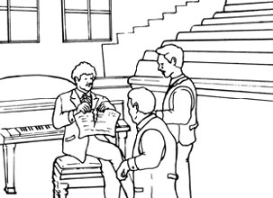
DLChapter04_track04
This is a true story. In 1892 at Stanford University, an 18-year-old student was struggling to pay his school fees. His mother and father were dead, so he didn't know*1where to turn for money. One day, he had a bright idea. He and a friend decided to host a concert on campus to raise money for their education.
They contacted the great pianist Ignacy Jan Paderewski. His manager demanded that they pay a fee of $2,000 for the piano concert. The boys agreed and began to work to make the concert a success.
The big day arrived.*2Unfortunately, they had not managed to sell enough tickets. They could get only $1,600. They went to Paderewski and explained the situation. They gave him the entire $1,600 and they wrote a signed letter promising to pay another $400*3as soon as possible.
"No," said Paderewski. "I cannot accept this." He*4tore up the letter, returned the $1,600 and told the two boys, "Here's the $1,600. Use the money to pay your school fees." The boys were surprised, and thanked him a lot.
It was a small act of kindness. Why did he help two people he did not know well? We all*5come across situations like this in our lives. But most of us think, "If I help them, what would happen to me?" The truly great people think, "If I don't help them, what will happen to them?" Great people help others without expecting something*6in return. They feel it's the right thing to do.
Paderewski later became the*7prime minister of Poland. He was a great leader, but sadly his country suffered greatly during World War I. There were more than 1.5 million people without food to eat in Poland. Paderewski did not know where to turn for help. He contacted an organization in the U.S. for help.
The head of that organization was a man called Herbert Hoover, who later became the U.S. president. Hoover quickly shipped tons of food to help the hungry people in Poland.
The worst possible situation was avoided. Paderewski went over to meet Hoover to thank him*8in person. When Paderewski began to express his thanks, Hoover quickly stopped him and said, "You don't have to do it, Mr. Prime Minister. Several years ago, two young students were able to go to college thanks to your help. I was one of them."
The world is a wonderful place. What goes around comes around!
411words
The point of this story
DLMP3_19
If someone you don't know asks you for help, what will you do? Even if you help them, in most cases, you won't get any help from them in return because you won't see them again. But imagine their smiles and words of thanks for your kindness. Those things will make you happy. And perhaps you actually will get some help from them someday, like the pianist in this story!
これは、本当にあった話です。1892年、スタンフォード大学で、ある18歳の学生が、授業料の支払いに苦労していました。母親と父親を亡くしていたので、金銭的にどこへ頼れば良いのか分かりませんでした。ある日、彼は名案を思い付きました。彼と友人は、自分たちの教育資金を集めるために、キャンパスでコンサートを開くことにしたのです。
彼らは、偉大なピアニストであるイグナツィ・ヤン・パデレフスキーに連絡を取りました。彼のマネジャーは、そのピアノコンサートへの出演に2,000ドルの謝礼を要求しました。少年たちは同意し、コンサートを成功させるために動き始めました。
ついにその日が来ました。不幸なことに、彼らは十分な枚数のチケットを売ることができませんでした。1,600ドルしか集めることができなかったのです。彼らはパデレフスキーのところへ行き、状況を説明しました。彼に1,600ドル全てを渡し、署名入りの手紙を書いて、あと400ドルをできるだけ早く支払うと約束しました。
「いや」と、パデレフスキーは言いました。「これは受け取れない」。彼は手紙を破り、1,600ドルを返すと二人の少年に言いました。「ここに1,600ドルある。君たちの授業料を支払うのに使いなさい」。少年たちは驚き、彼にとても感謝しました。
それは小さな親切でした。なぜ彼はよく知らない二人を助けたのでしょうか？ 私たちは皆、人生の中でこのような状況に遭遇します。しかし、ほとんどの人は、「もし彼らを助けたら、自分はどうなるだろう？」と考えます。本当に偉大な人は、「もし彼らを助けなければ、彼らはどうなってしまうだろう？」と考えるのです。偉大な人は、見返りに何かを期待して他人を助けるのではありません。それが正しい行動だと思っているのです。
その後、パデレフスキーはポーランドの首相になりました。彼は素晴らしいリーダーでしたが、悲しいことに、彼の国は第一次世界大戦の間、非常に苦しみました。ポーランドには、食べるものがない人々が150万人以上いたのです。パデレフスキーは、どこに助けを求めたら良いか分かりませんでした。彼はアメリカのある組織に支援を要請しました。
その組織の代表はハーバート・フーバーという男性で、後にアメリカ大統領となった人物でした。フーバーはポーランドの空腹の人々を助けるために、何トンもの食糧をすぐに送りました。
予想されうる最悪の事態は回避されました。パデレフスキーは、お礼を言うために、自らフーバーに会いに行きました。パデレフスキーがお礼を述べ始めると、フーバーはすぐに彼をさえぎって言いました。「首相、そのようなことをなさる必要はありません。数年前、あなたが助けてくださったおかげで、二人の若い学生が大学に通うことができました。私はその一人なのです」
世界は素晴らしいところです。自分がしたことは、自分に返ってくるのです！
このストーリーのポイント
もしもあなたの知らない人から助けを求められたら、あなたならどうしますか？ その人を助けてあげても、その人とはもう会わないでしょうから、多くの場合、その人からお返しに助けてもらうことはないでしょう。しかし、その人のあなたの親切に対する笑顔と感謝の言葉を想像してみてください。それらはあなたを幸せな気持ちにするでしょう。それに、この話のピアニストのように、ひょっとしていつかその人から助けてもらうことが、本当にあるかもしれませんよ！
Susan and Mark
スーザンとマーク
夫婦愛
医療ミスで視力を失ったスーザンは、バスで通勤している。ある日突然、暗闇の世界で生きることになったスーザンが、いかにして再び自立した生活を送れるようになったのか？ 彼女のそばにはいつも、彼女を見守る夫、マークの存在があった。
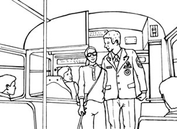
DLChapter04_track05
A young woman with a white stick carefully got onto the bus. She paid the driver and, while she was using her spare hand to feel the seats, walked along the*1aisle until she reached the seat he'd told her was empty. Then she sat down, placed her bag on her lap and*2rested her stick against her leg.
It was a year ago that Susan, 34, became blind. Due to a medical error she was suddenly thrown into a world of darkness, anger, and*3self-pity.*4Once a truly independent woman, Susan now felt weak and helpless, and hated having to trouble everyone around her. "Why did this happen to me?" she would ask, but she got no answer.
And even though she cried and complained and prayed, she knew her sight was never going to return. Just living each day was difficult. She was happy she had her husband Mark.
Mark was an*5Air Force officer and he loved Susan with all of his heart. When she first lost her sight, he watched her suffer and was determined to*6help his wife get the strength and confidence she needed to become independent again.
Finally, Susan thought she was ready to return to her job. But now she was too frightened to take the bus. Mark offered to drive her to work each day.
At first, this seemed to be a good idea. Soon, however, Mark realized that it was difficult, and cost a lot of money. How could he tell Susan that she had to take the bus again?
When Mark told her, Susan said, "I'm blind! How*7am I supposed to know where I'm going? I feel like you're leaving me."
Mark's heart broke to hear these words, so he promised Susan that each morning and evening he would ride the bus with her until she*8got the hang of it.
Each day, for two weeks, Mark, dressed in his uniform, accompanied Susan*9to and from work. He taught her how to rely on her hearing to determine where she was, and how to*10get used to her new environment. He helped her become friends with the bus drivers who could*11watch out for her, and*12save her a seat. He made her laugh, even on those not-so-good days.
Each morning they made the journey together, and Mark would take a cab back to his office. Although this cost more money and was more tiring than driving her, Mark knew Susan would soon be able to ride the bus on her own. He believed that she would never give up.
Finally, Susan decided that she was ready to try the trip alone. Monday morning arrived, and before she left, she*13threw her arms around Mark.
She thought of his loyalty, his patience, his love and her eyes filled with tears. That morning for the first time, they went their separate ways. Each day went perfectly. She was doing it! She was going to work all on her own!
On Friday morning, as Susan was paying her fare, the driver said, "Oh, you are so lucky." Susan didn't know if the driver was speaking to her or not.
So she asked the driver, "Why do you say that?" The driver answered, "It must feel so good to be taken care of and protected like you are." Susan didn't know what he was talking about, so she asked again, "What do you mean?"
The driver answered, "You know, every morning for*14the past week, that gentleman in the uniform has been standing across the road watching you when you get off the bus. He*15makes sure you cross the street safely and he watches you until you enter your office building. Then he blows you a kiss, and walks away. You are very lucky."
Tears of happiness ran down Susan's cheeks.*16For although she couldn't see him with her eyes, she had always felt Mark's presence. She was so lucky, for he had given her a gift more powerful than sight,*17a gift she didn't need to see to believe --- the gift of love that brought light to the darkness.
693words
The point of this story
DLMP3_20
When our family members or friends*18are in trouble, there are many different ways we can help them. We can do things for them that they can't do for themselves. We can support them when they are trying to do something*19by themselves. Or, we can watch over them, like Mark did.
白いつえを持った若い女性が、慎重にバスに乗りました。運転手に代金を払うと、もう一方の手を使って座席の位置を感じながら通路を歩き、運転手が彼女に空いていると教えてくれた席にたどり着きました。そして座席に腰を下ろし、膝の上にかばんを置き、足につえを立て掛けました。
34歳のスーザンが視力を失ったのは、一年前のことでした。医療ミスのせいで、彼女は突然、暗闇と怒りと自己憐憫の世界に放り込まれました。かつては真に自立した女性であったスーザンは、今や弱さと無力感を覚え、周囲の人々に迷惑をかけてしまうことが嫌でした。「どうして私はこんなことになったのかしら？」とよく問い掛けたものでしたが、答えは見つかりませんでした。
でも、どんなに泣いたり不満を言ったり祈ったりしても、自分の視力が決して戻らないことは分かっていました。毎日を乗り切るだけで精いっぱいでした。夫のマークがいてくれて、彼女は幸せでした。
マークは空軍将校で、心の底からスーザンを愛していました。視力を失った当初、彼女が苦しむのを見て、彼は妻が再び自立するために必要な強さと自信を取り戻す手助けをする決心をしました。
ついにスーザンは、仕事に戻る覚悟ができたと思いました。けれど、今は怖くてバスに乗ることができませんでした。マークは、毎日車で職場まで送っていくことを申し出ました。
最初は、これはいい考えのように思われました。しかし、すぐにマークは、これは大変な上にお金がたくさんかかると気付きました。スーザンにもう一度バスに乗らなくてはいけないと、どうして彼が伝えられるでしょうか？
マークがスーザンに伝えると、彼女は言いました。「私は目が見えないのよ！ 自分がどこへ行こうとしているのか、どうやったら分かるっていうの？ あなたは私を見捨てるのね」
マークはその言葉を聞いて心を痛め、毎日朝と夕方、スーザンがこつをつかむまで、バスに一緒に乗ることを約束しました。
二週間の間、マークは制服を着て、毎日スーザンの仕事の行き帰りに付き添いました。彼は彼女に、聴力によって自分がどこにいるか知る方法、そして新しい環境に慣れる方法を教えました。彼は、彼女に目を配ってくれ、席を確保してくれるバスの運転手と彼女が仲良くなる手助けをしました。あまり調子が良くない日でも、マークはスーザンを笑わせました。
毎朝、二人は一緒に行き、マークはタクシーで自分の職場に戻りました。これは彼女を車で送っていくより、もっと費用がかかる上に疲れて大変でしたが、マークはスーザンがすぐに自分でバスに乗れるようになると分かっていました。彼は、彼女が決して諦めないと信じていたのです。
ついに、スーザンは一人で職場へ行く決心をしました。月曜日の朝になりました。出掛ける前に、彼女はマークに勢いよく抱きつきました。
彼の誠実さ、忍耐力、愛の深さを思い、彼女は目に涙をためていました。その朝初めて、二人は別々の道に向かいました。毎日、完璧にいきました。彼女はうまくやっていました！ 自分一人で出勤したのです！
金曜日の朝、スーザンが運賃を支払っていると、運転手が言いました。「本当に、あなたはとても幸せな人ですね」。スーザンは、運転手が自分に話し掛けているのかどうかもよく分かりませんでした。
そこで彼女は運転手に尋ねました。「なぜそんなふうにおっしゃるのですか？」。運転手は答えました。「あなたのように大事にされて守られているのは、幸せに決まってます」。スーザンは何のことか分からなかったので、また質問しました。「どういう意味ですか？」
運転手は答えました。「ほら、この一週間、毎朝制服を着た紳士が道路の向こう側に立っていて、あなたがバスを降りるのを見守っているんです。彼は、あなたが無事に道路を横断するのを確かめて、あなたが会社の建物に入るまで見守っているんですよ。それからあなたに投げキスをし、立ち去ります。あなたは本当に幸せですね」
幸せの涙がスーザンの頰をつたいました。というのも、自分の目で彼の姿を見ることはできませんでしたが、彼女はいつもマークの存在を感じていたからです。彼女はとても幸せでした。彼が視力よりも力強い贈り物、目で見なくても信じることができる贈り物を彼女にくれたのですから。それは、暗闇に光をもたらす、愛の贈り物でした。
このストーリーのポイント
家族や友人が困っているとき、助けてあげる方法はいろいろあります。自力でできないことを抱えている人のために、何かしてあげることもできます。その人が何かしようとしているときにサポートしてあげることもできます。また、マークのように、ただ見守ることもできるのです。
*1 aisle：（座席の間の）通路
*2 rest：...を置く、休ませる
*3 self-pity：自己憐憫、自分を哀れむこと
*4 once：かつては、昔は、一度
*5 Air Force：空軍
*6 help ... get ~：...が～を手に入れるのを手助けする
*7 be supposed to ...：...することを期待される、...することになっている
*8 get the hang of ...：...のこつをつかむ
*9 to and from work：仕事の行き帰り
*10 get used to ...：...に慣れる
*11 watch out for ...：...に目を配る、気を付ける
*12 save ... ~：...に～を確保する、残しておく
*13 throw one's arms around ...：勢いよく...に抱きつく
*14 the past week：過去一週間、この一週間
*15 make sure ...：...を確認する
*16 for ...：（その理由は）...だから
*17 a gift she didn't need to see：目で見る必要がない贈り物、目には見えない贈り物
*18 be in trouble：困っている
*19 by oneself：自分で、独力で
どんどん読める 誰かに話したくなる
英語で心いやされる ちょっといい話（電子書籍版）
発行日：2014年3月1日（Ver.1.0）
企画：株式会社アルク 英語出版編集部 ちょっといい話製作委員会
英文校正：Peter Branscombe、Margaret Stalker
表紙デザイン：岡優太郎（synchro design tokyo）
イラスト：泰間敬視
ナレーション：Kimberly Forsythe、Howard Colefield
録音・編集：株式会社メディアスタイリスト
電子書籍制作：株式会社ジェイ エスキューブ
発行者：平本照麿
発行所：株式会社アルク
〒168-8611 東京都杉並区永福2-54-12
Email：csss@alc.co.jp
Website：http://www.alc.co.jp/
・本書は「英語で心いやされる ちょっといい話」（2014年発行）の電子書籍版です。
・本書の全部または一部の無断転載を禁じます。著作権法上で認められた場合を除いて、本書からのコピーを禁じます。
(C)2014 Takashi Taima / ALC PRESS INC.
PC：9580257
ISBN：9784757423275